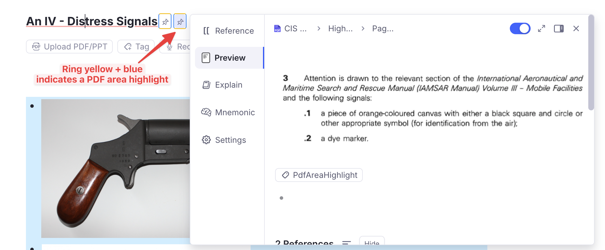

Colour Coding Reference¶
Every colour the plugin draws in one place. Nothing here is configurable per-colour; the toggles that turn whole groups on and off are named in the last column and live in Plugin Settings.
The priority ramp¶
One scale underlies every priority colour in the plugin. An item's percentile within its population — Incremental Rems ranked against Incremental Rems, flashcards against flashcards — maps onto a hue:
hsl(percentile ÷ 100 × 240, 80%, 55%)
| Percentile | Hue | Reads as |
|---|---|---|
| 1 | 0° | red |
| 25 | 60° | yellow |
| 50 | 120° | green |
| 75 | 180° | cyan |
| 100 | 240° | blue |
Red is urgent, blue is background. The ramp is relative, not absolute: a Rem at priority 30 is red in a knowledge base where everything else is lower-numbered, and green in one where it is typical. That is deliberate — the colour answers "how does this rank against my other material?", which a fixed scale cannot.
It appears wherever a priority is shown as colour: the table-cell badges (70s), the priority badges in the editor and queue, the Highlights side-panel badges, and the tint on PDF highlight markers.
Editor¶
| Marker | Colour | Meaning | Setting |
|---|---|---|---|
| Left border, 3px | green | The Rem is an Incremental Rem — spans the Rem and its descendants | Green Left Border for IncRems |
| Left border, 3px | amber #f59e0b |
Dismissed, with preserved history — spans the Rem and its descendants | Yellow Left Border for Dismissed Rems |
| Text background | blue #8ad0f3 (dark #1e496b) |
A PDF/web highlight you have extracted from (#pdfextract) |
— |
| Text background | green #75f8b2 (dark #1a5c3a) |
A highlight that is itself an Incremental Rem | — |
| Dimmed, shrunk text | — | Tagged #ignore — archived, still readable; applies to the Rem and its descendants |
— |
| Faded, grayscaled, zoomed-out text | — | Tagged #cloze-extract — a cloze created with Opt+Z, safe to skip when reading; applies to the Rem and its descendants |
— |
| Yellow background + red text | — | Source text already used for a cloze (Opt+Z) |
— |
| Bookmark glyph in the Priority Editor | green #10b981 |
The Rem has a read point — expand the widget to see where | — |
Both left borders run down the whole block, so an outline reads as one unit rather than a marked first line above unmarked children. Two places keep a single-line marker instead: the document you are currently inside, which is marked on its title only — a bar down the entire page says nothing useful — and the queue, portals, hover previews and PDF highlights, where there is no block to span.
The #ignore and #cloze-extract treatments also cover the Rem's descendants in the open document, updating a moment after you add, move or re-tag a Rem. Hovering or focusing a row brings it back to full strength. Rems shown through a portal from another document keep their normal look.
Reference pin rings¶
A ring around a pin says where that pin leads, which matters most inside an extract — the plugin leaves both a reference to the parent Rem and a pin to the source highlight.
| Ring | Says |
|---|---|
| Blue (RemNote's accent) | leads to a Rem holding an image — a figure in your own notes |
Yellow #eab308 |
leads to a text highlight on a PDF page — the source passage |
Purple #a855f7 |
leads to a text highlight in an HTML source — a saved web article or a PDF's Text Reader view |
| Yellow + blue, alternating edges | leads to a PDF area highlight — a clipped figure from the source |
| Bottom and right edges in a ramp colour | the target highlight carries a priority band — hue from the ramp above, dashed if you have extracted from it, dotted if it is merely linked |
| none | an ordinary Rem |
Yellow and purple mean "leads into a source document" — a PDF page or HTML text respectively, which tells apart the two pins of a passage pinned in both views of a PDF — blue means "you will land on an image", and an area highlight — being both — carries both. The rings brighten on hover or while the Rem is being edited, each in its own hue.

The band edges are not a fourth ring — they are the priority band of the linked highlight, the same marker the PDF reader draws, appearing here because a reference container carries the referenced Rem's tags. So a pin can say two things at once: where it leads (top and left) and how important that target is (bottom and right).
Off by default, via Enable Pin Reference Colour Rings. Two of the three states depend on tags that only exist after Tag Rems With Images has been run, so the feature is opt-in. With the setting off, pins are left completely unmarked — including the priority-band border the highlight styling would otherwise draw on them.

The two share one box rather than nesting: the band owns the bottom and right edges, the ring owns top and left. That is why an area highlight's top edge is yellow and its left edge is blue — those are the two that survive when a band is present. The pin's box is also normalised back to square, since the band marker is sized for a passage of running text and would otherwise leave the pin lopsided and larger than its neighbours.
PDF and web reader¶
Highlights keep their original background; the marker is drawn around it, tinted by the priority band of the Incremental Rem extracted from that highlight.
| Marker | Provenance |
|---|---|
| Dashed underline + solid side bar | Extracted — an Incremental Rem was made from this highlight |
| Dotted underline + dotted side bar | Linked only — referenced by a flashcard or prioritised Rem, never extracted |
Colour means priority; line style means provenance. Both are suppressed by the Toggle PDF Highlight Borders command ("peek" mode), which leaves the highlight backgrounds clean.
Queue¶
| Marker | Colour | Meaning |
|---|---|---|
| Emphasis box, thick border | green | The Incremental Rem being reviewed — the queue item itself |
| Emphasis box | green | An Incremental Rem among the descendants |
| Emphasis box | blue | The current read point |
Bullet badge ↑ |
violet #7c3aed |
A cloze child created by Create Cloze Deletion |
Analytics and dashboards¶
Progress bars in the Weighted Shield breakdown and the Card Priority × Memory table share one scale, so the same percentage never gets two colours:
| Value | Colour |
|---|---|
| ≥ 95% | green #22c55e |
| ≥ 80% | lime #84cc16 |
| ≥ 50% | amber #eab308 |
| below | red #ef4444 |
Green starts at 95%, not 100%: at 99.8% the answer to "am I on top of this?" is yes.
Retention¶
Retention — the share of graded answers that were not Again — uses a coarser three-step scale, shared by the Practiced Queues history and Live Dashboard, the Study Dashboard and the Flashcard Repetition History:
| Value | Colour |
|---|---|
| ≥ 90% | green #16a34a |
| ≥ 80% | amber #ca8a04 |
| below | red #ef4444 |
Three steps, not four, because retention is a judgement rather than a progress bar: above 90% you are over-reviewing, below 80% the material is not sticking, and in between is where it should be. Lapse counts are always shown in the same red, in parentheses after the repetition count. Where nothing has been answered there is no retention to report, and the figure is shown in neutral grey rather than a colour.
The finer five-step ramp in the Card Priority × Memory and FSRS Calibration analytics is a different scale — those views compare predicted against actual retrievability, where the size of the gap is the point, so they need more gradations than the three bands above.
The Queue Dashboard's speed reading has its own red→green scale, either fixed cpm thresholds or calibrated against your own history — see Speed colour coding.
Why these colours do not collide¶
The priority ramp occupies hue 0–240, which is red through green through blue. Anything that must not read as a priority has to sit outside that span or use a different channel:
- Pin rings use a fixed accent blue, a fixed yellow and a fixed purple, but they are a hairline border on an 18px icon — never a background fill and never a left border — and they appear on nothing but pins. Where a pin also carries a band, the two occupy different edges of the same box, so neither has to give way.
- Provenance on highlight markers uses line style, not hue, precisely because hue was already taken.
#pdfextractblue and#incrementalgreen are backgrounds behind text, a channel nothing else uses in the editor.